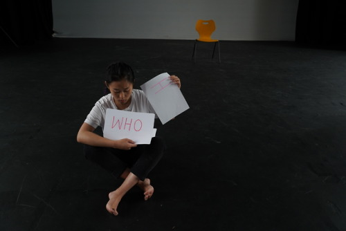
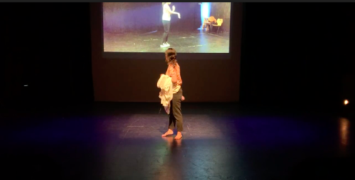

The performance is a Practice as Research Project. This theatre project will be a solo performance with short presentation in James Arnott Theatre. The purpose of the final performance is to achieve 35 minutes of soloperformancein the theatre. The production also involves using the sound, video, and media to make up the story more specific, and focus on training or preparing which happens behind the stage. During the show, Wanjin will be the only actress on the stage physically. The combining methods of using technique or media equipment is a difficult part while rehearsing on timing the lines. This performance is very challenging for an independent researcher.
Wanjin Li is an actress and performance maker whose recent research interests include actress training, body language, feminism, memory, culture, and solo performance. Under the conditions of a civilized society, the relationship between people becomes very sensitive, and the pace of life is getting increasingly faster.
The Preparation of performance Introspection

Wanjin aims to enhance trust and cooperation between people through the training process borrowed from a traditional art as well as by promoting the significance of education through performance. The voice and the body belong to the necessary skills of drama performance, and they are also the most direct way for people to communicate (Schechner, 2017). Training can often be a lengthy process, and eventually, each individual will gain different results. The outcome depends on different physical qualities. The long training process is like a documentary of life or an autobiography. In the current era, it is necessary for us return to the original method of meditation for human beings can gain much from this inner peace.
Performing is a self-reflection based on a long and boring training process. On the time line of life, the training process can achieve continuous self-orientation and self- reflection (Emunah, 2015). The whole show shows the changes brought about by the details through concentration, restraint, courage and respect. Many momentary memories emerge in everyone’s mind like pictures and evoke personal memories. The nature of these memories is neutral, just like everyone has their own memories. These fragments also directly reflect everyone’s state of mind. Likewise, the performance is to help the reality through its own difficulties by looking back on the past, or to reflect on itself (Williamson, 2016).
Looking Back
People can heal themselves through their inner voices or find their way when they are lost. These recalled memories also barely reflect the state of the person’s mind at that time. In addition, the performance process is different from traditional Chinese Peking Opera, which is more modern and life-oriented. In addition to the interpretation of culture, the highlighted “training” section also shows the “behind-the-scenes” stories that are unknown.

The play itself is to forget its own experience and look forward to the present and future. For the audience, some of them may face various difficulties or troubles, or they may succeed. Therefore, the play wants to evoke the audience’s own memories and make some comparisons between the present life and the past. Audiences facing difficulties can gain strength. The self-lost audience can find their way through the memory of their own voice. Successful audiences can learn to control their desires and always remember their original intentions. Audiences play an important role in the development of drama activities, but in fact, dramatic activities also have great significance to the audience. Drama cannot be separated from the audience from the moment it was born. Drama performance is a kind of collective ceremony.
Play-Within-the Play

I chose two parts to show the daily life of Chinese women in feudal society. The first part is agriculture, feeding chickens, and the second part is embroidery. This character is an unmarried girl. After washing her face in the morning and combing her hair, she began to worry about her future. However, when she opened the door, she found the weather to be good. Therefore, she planned to bring the chicken to the yard. Then she found a missing person and began to watch anxiously. Finally, she found it in the corner of the house and was relieved. After that, she went to sew threads and handkerchiefs of different colours, then looked at the chicken and embroidered. The whole process is based on the embroidery process of ordinary family girls of that era, from choosing colours, making lines, to arrows, and then starting to embroider pictures.
Poetry and lines
- Voice practices
- “The cuckoo weeps on the branch. moaning with tears and blood.” (Chinese - A poem tells a bird because his favourite branch has fallen leaves, screaming because of sorrow, until the bird vomits blood. )
- Singing: Yujiao Sun has been sorting out in the morning, why our girls are always so upset! (Chinese)
- Singing: I am alone, there is nothing to do but weaving and embroidery. The weather outside is very good! (Chinese)
- Are you ready
- Who are you